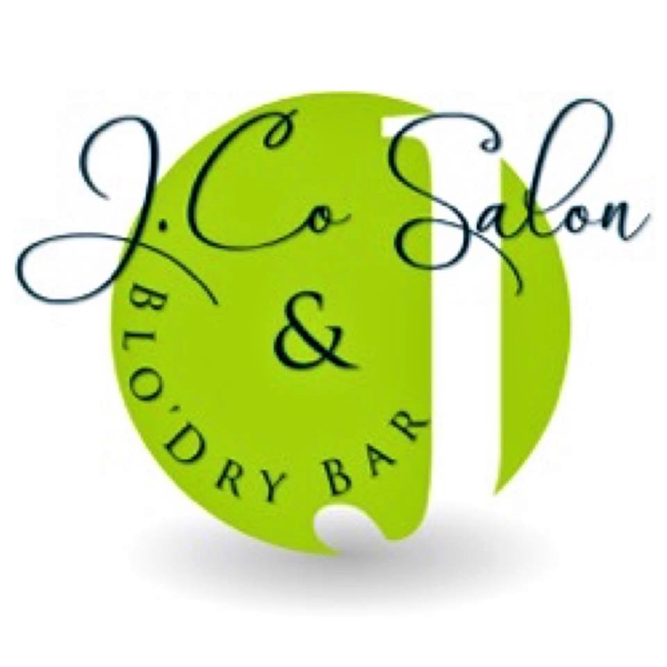

 J. Co Salon & Blo'Dry Bar
Home
Hair Services
Nail Bar
Reviews
About
Please call and ask about our Nail Bar!
417 Hay St. Suite B
Fayetteville, NC 28301
(910)401-3800
Hours: Tuesday & Wednesday 9am to 6pm
Thursday & Friday 9am to 8pm
Saturday 8:30am to 4pm
Closed Sunday & Monday